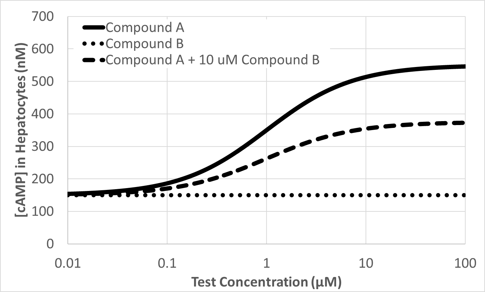
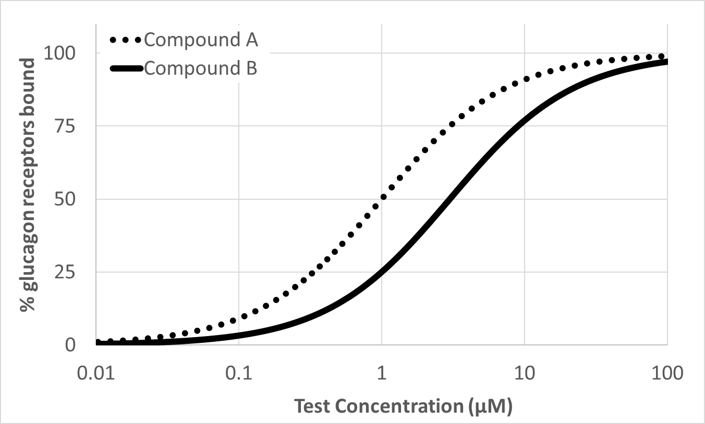
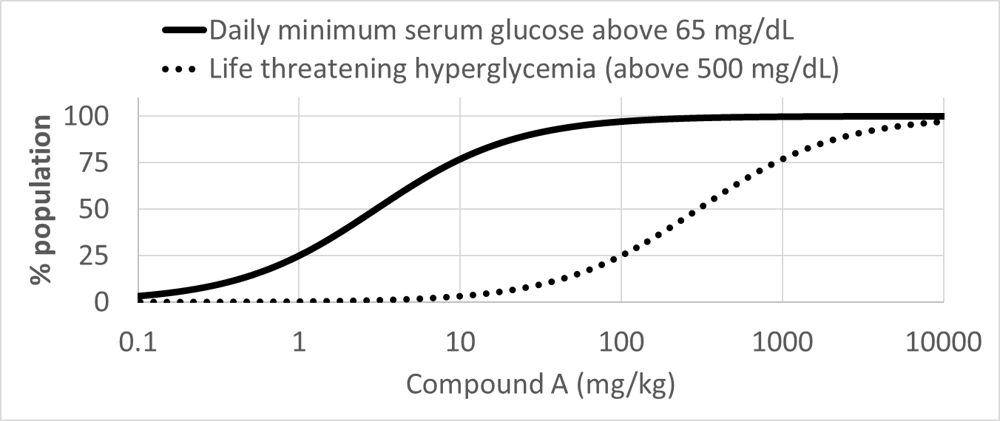

Whole exam · 24 questions · 8 with graphs · answer out loud, then tap
Basel 2023 Exam 4 · Q1Exam 4 lecture🔁 also 2018, 2020Which of the following enzymes is required for synthesis of all eicosanoids?
A.5-leukotriene oxidase (5-LOX)
B.Phospholipase A₂
C.Prostaglandin Synthase 1 (PTGS1/COX1)
D.Prostaglandin Synthase 2 (PTGS2/COX2)
⬇️ Answer?
B. Phospholipase A₂
💡 Why + source
PLA2 cuts arachidonic acid out of membrane phospholipid: the starting step for every eicosanoid.
📖 LC28 S6
💗 TAP TO REVEAL
Basel 2023 Exam 4 · Q2Exam 4 lecture🔁 also 2018, 2019, 2020Prostaglandin E₂ receptor EP₂ is a G_(s)-coupled receptor. What second messenger would be expected in response to PGE₂ in cells expressing EP₂?
A.Decreased cAMP
B.Increased cAMP
C.Increased DAG
D.Increased IP₃
E.Increased Ras activity
⬇️ Answer?
B. Increased cAMP
💡 Why + source
Gs → adenylyl cyclase → ↑ cAMP.
📖 LC27; LC28 S9
💗 TAP TO REVEAL
Basel 2023 Exam 4 · Q3Exam 4 lecture🔁 also 2020Which of the following pharmaceutical classes is most likely to cause ulcers in the digestive epithelium?
Basel 2023 Exam 4 · Q6Exam 4 lecture🔁 also 2019, 2022The G₁/S cyclin-dependent kinase phosphorylates which protein?
A.E2F
B.p21
C.p53
D.pRB
⬇️ Answer?
D. pRB
💡 Why + source
G1-CDK phosphorylates pRb → E2F released → S phase.
📖 LC31 S15
💗 TAP TO REVEAL
Basel 2023 Exam 4 · Q7Exam 4 lectureAfter a cell-cycle checkpoint is completed, what generally happens to the associated cyclin?
A.It is phosphorylated and deactivated
B.It is degraded by the proteasome
C.It binds to the cyclin-dependent kinase and inactivates it
D.It migrates into the nucleus
⬇️ Answer?
B. It is degraded by the proteasome
💡 Why + source
CDK phosphorylates its own cyclin → proteasome, so the cycle can't go back.
📖 LC31 S14
💗 TAP TO REVEAL
Basel 2023 Exam 4 · Q8Exam 4 lectureWhich of the following proteins tends to cause mitochondrial pores to remain closed and reduces the activity of the internal apoptotic pathway?
A.Axin
B.Bax
C.Bcl-2
D.p53
⬇️ Answer?
C. Bcl-2
💡 Why + source
Bcl-2 keeps mitochondrial pores closed → no cytochrome C release. Bax opens them.
📖 LC32 S10
💗 TAP TO REVEAL
Basel 2023 Exam 4 · Q9Exam 4 lectureA neoplasm that expresses high levels of Fas would likely:
A.Be very susceptible to immune destruction
B.Have reduced susceptibility to immune destruction
C.Cause apoptosis of cytotoxic T-cells
⬇️ Answer?
A. Be very susceptible to immune destruction
💡 Why + source
Fas on the tumor = target for FasL on cytotoxic T cells → extrinsic apoptosis → very susceptible. Tumors that EXPRESS FasL kill T cells instead.
📖 LC32 S12–S14
💗 TAP TO REVEAL
Basel 2023 Exam 4 · Q10Exam 4 lectureselect allWhich of the following proteins would be correctly identified as a protooncogene? (select ALL that apply)
A.β-catenin
B.Bcl-2
C.E2F
D.pRB
E.Ras
⬇️ Answer?
A. β-catenin B. Bcl-2 C. E2F E. Raslikely
💡 Why + source
Gain of activity causes cancer: β-catenin, Bcl-2, E2F, Ras = proto-oncogenes. pRb = tumor suppressor.
📖 LC32 S17–S20
⚠️ β-catenin, Bcl-2 and E2F classified by the gain/loss rule; confirm at review if unsure.
💗 TAP TO REVEAL
Basel 2023 Exam 4 · Q11Exam 4 lectureselect allWhich of the following proteins would be correctly identified as a tumor suppressor gene? (select ALL that apply)
A.APC
B.Bax
C.p21
D.p53
E.pRB
⬇️ Answer?
A. APC B. Bax C. p21 D. p53 E. pRBlikely
💡 Why + source
Loss of activity causes cancer: APC, Bax, p21, p53, pRb are all brakes = tumor suppressors. Select-all where every option is correct.
📖 LC32 S17–S20
💗 TAP TO REVEAL
Basel 2023 Exam 4 · Q12Exam 4 lectureselect all🔁 also 2021Which of the following could produce extra oxidative stress in a cell? (select ALL that apply)
A.Chronic inflammation
B.Excess Vitamin C intake
C.Excess Vitamin E intake
D.Hemachromatosis (excess iron in the blood)
E.Reperfusion following transient infarct
⬇️ Answer?
A. Chronic inflammation D. Hemachromatosis (excess iron in the blood) E. Reperfusion following transient infarct
💡 Why + source
Chronic inflammation (respiratory burst), excess iron (Fenton), reperfusion (reverse electron flow) all raise ROS. Vitamins C and E are antioxidants.
📖 LC33 S9–S10
💗 TAP TO REVEAL
Basel 2023 Exam 4 · Q13Exam 4 lectureSome pathogenic bacteria (e.g. staphylococcal aureus) express high levels of catalase. High levels of catalase expression could cause which of the following?
A.Increased susceptibility of the bacteria to oxidative damage
B.Inability of neutrophils to recognize the bacteria
C.Reduced metabolic rate of the immune system
D.Resistance of the bacteria to lysosomal degradation by phagocytes
⬇️ Answer?
D. Resistance of the bacteria to lysosomal degradation by phagocytes
Coxibs block COX-2 → ↓ endothelial PGI2 (anti-clotting, Gs) while platelet COX-1 still makes TxA2 (pro-clotting, Gq) → balance tips toward clotting → cardiovascular events.
💡 Why + source
Clotting rule: block COX-2 → toward clotting.
📖 LC28 S7, S26
💗 TAP TO REVEAL
Basel 2023 Exam 4 · Q17Exam 4 lectureshort answer
You are exploring new treatments for reducing hypoglycemia in insulinoma patients by targeting the glucagon receptor. Compounds A and B bind the glucagon receptor. Use the graphs to answer.
What is the K_(d) of Compound A



⬇️ Answer?
~1 µM (50% of glucagon receptors bound).
💡 Why + source
Binding graph: Compound A crosses 50% bound at 1 µM.
📖 Graph 2 · LC30 S9–S10
💗 TAP TO REVEAL
Basel 2023 Exam 4 · Q18Exam 4 lectureshort answerWhat is the K_(d) of Compound B?
⬇️ Answer?
~3 µM.
💡 Why + source
Binding graph: Compound B crosses 50% bound at ~3 µM (higher KD = lower affinity than A).
📖 Graph 2
💗 TAP TO REVEAL
Basel 2023 Exam 4 · Q19Exam 4 lectureshort answerWhat is the EC₅₀ of Compound A?
⬇️ Answer?
~1 µM.likely
💡 Why + source
Response runs from ~150 (baseline) to ~550 nM cAMP; halfway (~350) is at ~1 µM. EC50 ≈ KD → no spare receptors.
📖 Graph 1 · LC29 S12–S14
💗 TAP TO REVEAL
Basel 2023 Exam 4 · Q20Exam 4 lectureshort answerWhat is the E_(max) of Compound A?
⬇️ Answer?
~550 nM cAMP (an increase of ~400 nM over the ~150 nM baseline).likely
💡 Why + source
Top plateau of the solid curve. Give units of the RESPONSE (nM cAMP), not drug concentration.
📖 Graph 1
⚠️ Whether Basel wants the plateau (550) or the rise above baseline (400) is unclear; state both.
💗 TAP TO REVEAL
Basel 2023 Exam 4 · Q21Exam 4 lectureshort answerWhat type of ligand is Compound B (be as specific as possible)? Why?
⬇️ Answer?
Non-competitive antagonist. It binds the receptor (binding graph) but causes no cAMP alone, and with A it LOWERS Emax (550 → ~375) without a big EC50 shift.
💡 Why + source
Lower ceiling = non-competitive; a right shift with the same ceiling would be competitive.
📖 Graphs 1–2 · LC29 S20–S22
💗 TAP TO REVEAL
Basel 2023 Exam 4 · Q22Exam 4 lectureshort answerWhat is the ED50 of Compound A?
⬇️ Answer?
~3 mg/kg.
💡 Why + source
Solid (therapeutic) curve crosses 50% of the population at ~3 mg/kg.
📖 Graph 3 · LC30 S15–S17
💗 TAP TO REVEAL
Basel 2023 Exam 4 · Q23Exam 4 lectureshort answerWhat is the LD50 of Compound A?
⬇️ Answer?
~300 mg/kg.
💡 Why + source
Dotted (life-threatening) curve crosses 50% at ~300 mg/kg.
📖 Graph 3
💗 TAP TO REVEAL
Basel 2023 Exam 4 · Q24Exam 4 lectureshort answerWhat is the therapeutic index of Compound A?
⬇️ Answer?
~100 (no units).
💡 Why + source
TI = LD50 / ED50 = 300 / 3 ≈ 100. Ratio = unitless.